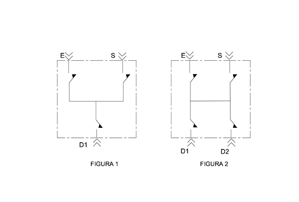
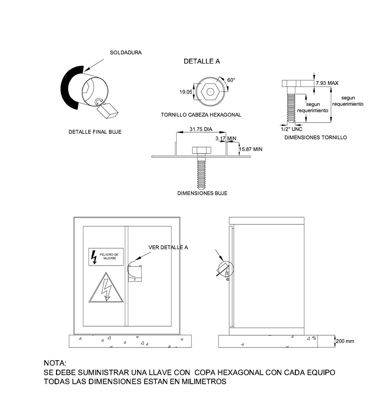

Siempre es más fácil conocer las normas ENEL-CODENSA
Rolex Rolex gold watch, compared with ordinary materials, gold watches are often expensive, but the replica rolex gold watch has the role of swiss replica watches hedging, so that it often becomes the first choice for collectors. The gold watch has value in the world, largely because the omega replica watch brand launched a commemorative limited edition watch or a replica hublot complex movement process or artistic attainments deep watches, mostly preferred gold precious metals such material. These watches tend to have a strong hedging function, therefore, Rolex Rolex gold watch reputation.

ET512 Cajas de maniobra de 15kV y 34,5kV
Datos adicionales
Número de especificación
ET 512
Fecha de vigencia
01/11/2023
Herramientas adicionales
- Contenido Ocultar
- 1. OBJETO
- 2. CARACTERÍSTICAS GENERALES
- 2.1 CAJAS DE MANIOBRAS TIPO PEDESTAL:
- 2.2 CAJAS DE MANIOBRAS TIPO INUNDABLE:
- 3. CONDICIONES DE SERVICIO
- 3.1 CONDICIONES AMBIENTALES
- 3.2 CERTIFICACIÓN
- 3.3 NORMAS DE FABRICACIÓN
- 4. CARACTERÍSTICAS CONSTRUCTIVAS
- 4.1 MECÁNICAS
- 4.2 ELÉCTRICAS
- 5. PRESENTACIÓN DE LAS OFERTAS
- 6. PLACA DE CARACTERÍSTICAS
- 7. ACCESORIOS
- 8. ENSAYOS
- 8.1 ENSAYOS DE RUTINA (Production Tests)
- 8.2 ENSAYOS TIPO
- 8.3 INSPECCIÓN Y PRUEBAS DE RECEPCIÓN TÉCNICA
- 9. LISTADO DE DEFECTOS
- 9.1 CRITICOS
- 9.2 MAYORES
- 9.3 MENORES
- 10. CARACTERÍSTICAS TÉCNICAS CAJAS DE MANIOBRA DE 15 kV
- 11. CARACTERISTICAS TÉCNICAS CAJAS DE MANIOBRA DE 34,5 kV
1. OBJETO
Establecer las condiciones y exigencias de construcción, instalación y funcionamiento que deben satisfacer las cajas de maniobra a ser utilizadas por Enel Colombia.2. CARACTERÍSTICAS GENERALES
Las cajas de maniobras deberán tener las características de equipos de trabajo pesado, podrán transferir cargas de un circuito adyacente, con el objeto de mantener el servicio continuo, realizar transferencias para revisión y reparaciones o para conexión en derivación de subestaciones.Básicamente se utilizan los siguientes tipos de cajas de maniobras de acuerdo al tipo de aislamiento empleado y extinción del arco:
Medio de aislamiento y refrigeración:
- SF6.
- Solido Dieléctrico.
- Vacío.
- SF6.
Las cajas de maniobras son de tres, cuatro, cinco ó seis vías: Entrada y salida del circuito principal y una, dos, tres ó cuatro derivaciones, todas maniobrables con operación tripolar selectiva ON-OFF por cada vía.
2.1 CAJAS DE MANIOBRAS TIPO PEDESTAL:
Deben ser aptas para uso intemperie, instaladas de acuerdo con la norma CTS 520 en áreas de cesiones tipo A y B o en locales de subestación. Deben ser resistentes contra la lluvia, sol, humedad, insectos, polvo y todas las condiciones climáticas adversas que puedan causar deterioro de sus elementos constructivos y que originen un mantenimiento frecuente o la alteración de las partes eléctricas o mecánicas, grado de protección IP54.El medio de aislamiento para este tipo de cajas debe ser en SF6.
Nota: Cajas de maniobra pedestal no están permitidas en las políticas de ENEL como parte de su infraestructura. Para casos especiales o infraestructura de terceros se puede implementar esta solución con aislamiento en Aceite
2.2 CAJAS DE MANIOBRAS TIPO INUNDABLE:
Deben ser aptas para ser instaladas en cajas de inspección o locales debajo la superficie de zonas de utilidad pública previstas para la ubicación de infraestructura de servicios públicos domiciliarios de acuerdo con alguna de las dos alternativas indicadas en la norma CS 290, expuestos a inundaciones, grado de protección IP67, las conexiones y los mecanismos de operación e indicación de apertura ó cierre deben estar localizados en la parte superior del tanque de la caja de maniobras, el tanque de la caja de maniobras debe tener una base adecuada para evitar que el fondo del mismo esté en contacto con el piso de la caja de inspección.Debe existir una separación no menor de 4cm.
Para las cajas de maniobra del tipo inundable el medio de aislamiento debe ser en SF6 o Solido Dieléctrico.
La maniobra de las cajas de seccionamiento se deberá poder realizar desde el nivel de acera, mediante pértigas, aún en condiciones de inundado; para tal fin el equipo debe incluir palanca de operación que acople al mecanismo de operación en un extremo y en el otro un acople directo del tipo ojo abierto de tal manera que se pueda maniobrar con pértiga universal desde la superficie del andén.
3. CONDICIONES DE SERVICIO
El proponente deberá suministrar los planos de montaje detallado de la caja de maniobras, indicando dimensiones, entrada y salida de los cables, distancias eléctricas, distancias de mantenimiento, para confrontar con las dimensiones de las Normas CTS 523 o CS 290 de Construcción de Redes Subterráneas de Distribución Urbana y Centros de Transformación Subterráneos de Enel Colombia y verificar que el espacio interior es el adecuado para la instalación de los equipos.3.1 CONDICIONES AMBIENTALES
La zona de instalación presenta clima cálido y húmedo.Los parámetros de operación son los siguientes:
- Altura sobre el nivel del mar: 2700 m
- Humedad relativa: 93%
- Temperatura ambiente máxima: 35 °C
- Temperatura ambiente mínima: -2 °C
- Temperatura ambiente promedio: 14 °C
3.2 CERTIFICACIÓN
La caja de maniobras debe estar certificada por las entidades competentes nacionales.3.3 NORMAS DE FABRICACIÓN
La caja de maniobras deberá fabricarse y probarse de acuerdo con las recomendaciones de las Normas IEC, ANSI o NTC Y las demás normas equivalentes reconocidas internacionalmente.| NORMA | DESCRIPCIÓN |
| IEC 62271-102 | High-voltage switchgear and controlgear - Part 102: Alternating current disconnectors and earthing switches |
| IEC 62271-103 | High-voltage switchgear and controlgear - Part 103: Switches for rated voltages above 1 kV up to and including 52 kV |
| IEC 60282-1 | High-voltage fuses - Part 1: Current-limiting fuses |
| ANSI IEEE C37.71 | Standard for Three-Phase, Manually Operated Subsurface and Vault Load-Interrupting Switches for Alternating-Current Systems |
| ANSI IEEE C37.32 | Standard for High Voltage Switches, Bus Supports, and Accessories Schedules of Preferred Ratings, Construction Guidelines, and Specifications |
| ANSI IEEE C57.12.28 | Standard for Pad-Mounted Equipment--Enclosure Integrity |
| ANSI IEEE 386 | Standard for Separable Insulated Connector Systems for Power Distribution Systems Above 600 V |
| ANSI ASTM D2472 | Standard Specification for Sulfur Hexafluoride |
| NTC IEC 60259 | Grados de protección dados por encerramientos de equipo eléctrico (Código IP) |
| NTC ISO 2859-1 | Procedimientos de muestreo para inspeccion por atributos. parte 1: planes de muestreo determinados por el nivel aceptable de calidad -NAC- para inspección lote a lote. |
| NTC 2076 | Recubrimiento de Cinc por inmersión en caliente para elementos en hierro y acero |
4. CARACTERÍSTICAS CONSTRUCTIVAS
4.1 MECÁNICAS
4.1.1 TANQUE
Cuando la caja de maniobras posee como medio de aislamiento gas SF6, el tanque de la caja de maniobras debe ser construido en lámina de acero inoxidable herméticamente sellado de la mejor calidad o cualquier otro material apto para el uso que se le dará, y deberán cumplir como mínimo las siguientes especificaciones:
- El acabado exterior deberá ser muy resistente a la intemperie, durante toda la vida útil de la caja de maniobras.
- Todas las uniones soldadas deberán presentar un buen acabado y soportar un esfuerzo mínimo igual al 150% del esfuerzo máximo, garantizando una unidad compacta y muy resistente, que le permiten permanecer bajo presión y cargas mecánicas durante el transporte e instalación sin sufrir deformaciones.
- La tapa del tanque deberá garantizar la hermeticidad del mismo, lo cual debe ser logrado por medio de una banda y otro dispositivo no alterable por las condiciones ambientales o de funcionamiento propio de la caja de maniobra, durante su tiempo de vida útil.
Todas las partes de mecanismos esenciales deben ser fabricados en acero inoxidable.
La tornillería M10 o menor será en acero inoxidable y para diámetros superiores será galvanizado en caliente según lo estipulado en la NTC 2076.
Los materiales del tipo no ferroso serán estañados.
El tanque y los compartimientos de las cajas de maniobra tipo pedestal deben ser construidos de forma tal que no permitan el des ensamblaje, ruptura o desprendimiento de cualquier puerta, panel o repisa con las puertas en posición cerrado y asegurado.
La puerta del compartimiento debe tener seguro en tres puntos con una manija provista de un dispositivo de seguridad. Las bisagras y pasadores de tapas y puertas deben ser construidos en acero inoxidable.
En caso de ofrecer como medio aislante SF6, deberá cumplir con la Norma ANSI ASTM D2472, poseer un dispositivo indicador de presión y una válvula para su llenado, e indicar el sistema de llenado tanto para puesta en operación, como para mantenimiento y válvula de alivio de sobrepresión.
Los compartimientos y la cubierta que componen la caja tipo pedestal deben ser construidos con lámina de calibre como mínimo 2,5 mm, y para las áreas de lámina plana expuesta mayores de 1 m2 se deben colocar refuerzos adecuados o aumentar el calibre de la lámina con el fin de evitar su deformación.
La cubierta superior debe soportar un peso de 100 Kg al centro sin causar deformación permanente que permita acumulación de agua en la superficie.
Los seccionadores de maniobra deben poseer un indicador de posición, que muestre permanentemente su estado de abierto o cerrado, el cual debe ser del tipo banderola. Preferiblemente deberá tener color rojo la palabra CERRADO y en color verde la palabra ABIERTO sobre un diagrama mímico pintado en la cara frontal para el tipo pedestal y en la parte superior para el tipo inundable.
4.1.2 BUJES
Los bujes deben tener dimensiones que sean compatibles con la norma ANSI/IEEE 386, correspondientes a los terminales preformados tipo codo de frente muerto y deberán satisfacer los requerimientos de los seccionadores aplicables de las Normas IEC o ANSI para aparatos instalados entre 1500 y 2700 metros sobre el nivel del mar, en ambiente tropical.
El material utilizado en los bujes debe ser de resina epóxica moldeada, homogénea y libre de imperfecciones que afecten la resistencia mecánica o la calidad dieléctrica. Los bujes deberán estar sólidamente unidos al tanque del seccionador de maniobra y garantizar hermeticidad total.
Para máxima seguridad de operación, las cajas deben ser de frente totalmente muerto, con los bujes y conexiones de cable ubicados en la parte lateral, en las cajas tipo pedestal y en la tapa superior en las cajas tipo inundable.
4.1.3 CONECTORES
Los conectores y terminales serán de gran resistencia a la corrosión y de características tales, que permitan absorber las variaciones de temperatura sin disminución de la presión ejercida sobre el conductor, no deberán presentar deformaciones bajo condiciones de carga normal.
Los conectores para conexión de los seccionadores de maniobra a la línea, debe tener capacidad para recibir calibres de conductores de aluminio aislamiento XLPE con pantalla en hilos de Cu en calibres normalizados en la especificación global GSC001, tales como 95mm2, 185mm2 y 240 mm2 en 11.4 kV y 240 mm2 en 34.5 KV.
Las conexiones de cables a los bujes, deben ser aptas para conexión por medio de codos preformados, fabricados de acuerdo con Norma ANSI IEEE 386.
4.2 ELÉCTRICAS
4.2.1 SECCIONADORES BAJO CARGA
Según sea de tres, cuatro, cinco ó seis vías cada caja poseerá tres, cuatro, cinco ó seis seccionadores tripolares bajo carga con medio de extinción del arco eléctrico vacío o SF6. El aislamiento adicional y refrigeración podrá ser en SF6.
Dos seccionadores tripolares serán utilizados para entrada y salida tipo anillo y uno, dos, tres ó cuatro para derivación. Los seccionadores cumplirán con las características de poder de corte, de cierre y de corriente de corta duración especificadas en la planilla de datos garantizados adjunta.
La norma de aplicación será la ANSI IEEE C 37.71.
Sobre la cara o tapa (según sea el caso) de la caja estará indicada en forma clara la posición de los comandos para los estados abierto y cerrado de los seccionadores.
Las cajas de maniobras en gas SF6, deberán tener la posibilidad de ser equipadas con comandos motorizados y transformadores de potencial, para la ejecución de transferencias automáticas entre circuitos.
Las dimensiones de las cajas de maniobra subterráneas incluido en mando motorizado deberán poder ser instaladas en la caja de inspección CS 290 Caja para alojar seccionador de maniobras en media tensión.
4.2.2 MECANISMOS DE OPERACIÓN
Los seccionadores de maniobra serán para operación manual mediante palanca removible individual para cada seccionador, fácil de maniobrar, con mecanismos de resorte para enganche y desenganche de los contactos principales del seccionador de maniobra, cuya velocidad de apertura y cierre sea independiente de la acción manual del operador.
La palanca para operar el mecanismo debe ser de un material apto para permanecer en condiciones de inundación y debe contener un acople al mecanismo de operación en un extremo y en el otro un acople directo del tipo ojo abierto de tal manera que se pueda operar o maniobrar con pértiga universal sin ningún inconveniente desde la superficie de la caja de inspección sin necesidad de ingresar a la misma o al sitio donde se encuentre el equipo.
El proponente deberá indicar el tiempo de operación del cierre del seccionador de maniobra y una descripción detallada del funcionamiento del mecanismo ofrecido.
En el caso de tener la caja de maniobras cuchillas de puesta a tierra, estas deben tener la misma capacidad de corte y cierre de los contactos principales de los seccionadores.
4.2.3 CONTACTOS
El ensamble de los contactos constará de contactos estacionarios y contactos móviles. Los contactos estacionarios incluirán contactos del arco y contactos de carga, terminados en forma tal que garanticen que la erosión debida al arco no afecta la condición eficiente de los contactos.
Los contactos móviles podrán ser dobles o similares de manera que garanticen eficientemente la transferencia de carga y larga vida útil.
Asimismo, la interrupción de las tres (3) fases se hará simultáneamente no permitiendo operaciones que conecten o desconecten una sola fase, para lo cual la apropiada sincronización de los tres (3) polos como su espaciamiento eléctrico debe ser coordinado en fábrica.
Los seccionadores de maniobra deberán tener capacidad de efectuar el cierre con su carga nominal como mínimo 1000 operaciones y bajo condiciones de corto circuito, al menos 3 veces durante su vida útil.
5. PRESENTACIÓN DE LAS OFERTAS
El fabricante deberá incluir en la oferta, la constancia de certificación de producto expedida por la entidad nacional competente, deberá suministrar información que demuestre la calidad y bondades del equipo, manuales de operación y mantenimiento en idioma español (preferiblemente) ó inglés, así como las dimensiones físicas, diagramas unifilares e instrucciones de montaje en pedestal o tipo sumergible debajo del suelo.6. PLACA DE CARACTERÍSTICAS
La caja de maniobras deberá tener una placa a prueba de intemperie y resistente a la corrosión, escrita en Español, e incluir como mínimo la siguiente información:- Fabricante.
- Tensión serie (kV).
- Tipo o modelo.
- Número de serie.
- Número de fases.
- Corriente nominal de cada una de las vías.
- BIL con onda completa (kV cresta).
- Contenido de SF6.
- Presión interna normal (en gas SF6) a 20° C en psig
- Peso total de la caja de maniobras.
- Año de fabricación.
- Orden de compra.
- Leyenda:ENEL.
También debe entregar una placa a prueba de intemperie con el diagrama unifilar que muestre la identificación de cada una de las vías.
7. ACCESORIOS
FUSIBLESEl tipo de fusible a utilizar debe ser el adecuado para garantizar la protección de un transformador de distribución del tipo pedestal o sumergible.
SOPORTE PARA IZAJE
Los dispositivos de levantamiento de la caja de maniobras deben ser diseñados para proveer un factor de seguridad mínimo de 5.
El factor de seguridad es la relación del esfuerzo último con el esfuerzo de trabajo del material usado.
El esfuerzo de trabajo es el máximo esfuerzo combinado, desarrollado en los dispositivos del levantamiento por la carga estática del transformador.
INDICADOR DE NIVEL (si aplica)
VÁLVULA DE LLENADO (si aplica)
VÁLVULA DE ALIVIO DE SOBREPRESIÓN
TORNILLO CONECTOR DE PUESTA A TIERRA.
SOPORTE DE MONTAJE EN CAJA CS290. Las cajas deberán venir incluidas con el soporte o base de la caja de maniobra que permita realizar de manera segura la operación manual desde la superficie con pértiga sin tener que bajar a la caja de inspección. Se deberá tener en cuenta que la altura de la caja de inspección es de 1.8 m
8. ENSAYOS
La recepción del material será efectuada por representantes de Enel Colombia.La ausencia de los representantes de Enel Colombia en el momento de ejecutar los ensayos y pruebas según lo programado, no eximirá al proveedor de efectuar los ensayos, y deberá comunicar inmediatamente a Enel Colombia el resultado de los mismos.
Los ensayos de recepción (Conformance Tests) serán efectuados en fábrica del proveedor quien deberá proporcionar el material y el personal necesario. Estos igualmente podrán ser efectuados en los laboratorios reconocidos por Enel Colombia.
Todos los materiales y/o equipos destruídos en los ensayos serán por cuenta y cargo del proveedor.
El costo de los ensayos, salvo los gastos de los representantes de Enel Colombia estará incluido en el precio.
Enel Colombia se reserva el derecho de realizar una inspección permanente durante todo el proceso de fabricación, debiendo el proveedor suministrar los medios necesarios para facilitar la misma.
La recepción de una partida estará subordinada al resultado satisfactorio de los ensayos de rutina (Production Tests) y de recepción (Conformance Tests).
A tal efecto el fabricante entregará a los representantes de Enel Colombia protocolos o planillas probatorias del cumplimiento de los ensayos de rutina (Production Tests).
Cumpliendo este requisito serán efectuados los ensayos de recepción (Conformance Tests) sobre las unidades seleccionadas a tal efecto por los representantes de Enel Colombia.
8.1 ENSAYOS DE RUTINA (Production Tests)
Durante el proceso de fabricación, sobre cada una de las cajas de maniobras serán efectuados los siguientes ensayos según ANSI IEEE C 37.71:• Inspección
• Ensayo de resistencia eléctrica a los circuitos
• Ensayo de rigidez dieléctrica en seco a frecuencia industrial (60 Hz):
a) Terminales contra tierra y contactos abiertos
b) Terminales contra tierra y contactos cerrados
c) Fases contra tierra y contactos cerrados
• Ensayos de hermeticidad
• Ensayo de operación de los seccionadores
Los valores de las tensiones a emplear en los ensayos de rigidez dieléctrica y de descargas parciales están indicadas en las planillas de características técnicas adjuntas.
8.2 ENSAYOS TIPO
Estos ensayos se realizarán para verificar que el diseño, del equipo o sus partes constructivas, reúnen los requisitos asignados para operar satisfactoriamente bajo condiciones normales de servicio o bajo condiciones especiales, si se especifica y así demostrar el cumplimiento con las normas de Enel Colombia.• Ensayo de resistencia de onda de impulso.
a) Terminales contra tierra y contactos abiertos.
b) Terminales contra tierra y contactos cerrados
c) Fases contra tierra y contactos cerrados
• Ensayo de seccionamiento con corriente nominal y 10% de la tensión nominal.
• Ensayo de calentamiento.
Con este último ensayo se verificarán los ensayos de calentamiento efectuados durante los ensayos de tipo.
Las mediciones para este ensayo se efectuarán sobre partes accesible del equipo y se cotejarán con los valores obtenidos en los mismos puntos en los ensayos de tipo.
A este efecto el fabricante junto con su oferta propondrá el método para efectuar esta prueba y suministrará las temperaturas de los puntos accesibles seleccionados correspondientes a las temperaturas en las partes conductoras y en el fluido aislante indicados en la planilla de características técnicas.
Así mismo indicará las variaciones admisibles en este ensayo respecto de los valores de referencia.
8.3 INSPECCIÓN Y PRUEBAS DE RECEPCIÓN TÉCNICA
Se debe tener en cuenta lo indicado en la norma Técnica Colombiana NTC ISO 2859-1 para determinar el control estadístico de calidad mediante la inspección por atributos. (defectos críticos, mayores y menores) .a) El inspector seleccionará el tamaño de la muestra para la inspección de acuerdo a las tablas No. 1, 2 y 3.
TABLA Nº 1. DEFECTOS CRITICOS (N.C.A. = 1.0)
| TAMAÑO DEL LOTE | TAMAÑO DE LA MUESTRA | ACEPTADOS | RECHAZADOS |
| 8 ó menos | 2 | 0 | 1 |
| 9-15 | 3 | 0 | 1 |
| 16 - 25 | 5 | 0 | 1 |
| 26 - 50 | 8 | 0 | 1 |
| 51 - 90 | 13 | 0 | 1 |
| 91 - 150 | 20 | 0 | 1 |
| 151 - 280 | 32 | 1 | 2 |
| 281 - 500 | 50 | 1 | 2 |
| 501 - 1200 | 80 | 2 | 3 |
| 1201 - 3200 | 125 | 3 | 4 |
| TAMAÑO DEL LOTE | TAMAÑO DE LA MUESTRA | ACEPTADOS | RECHAZADOS |
| 2-8 | 2 | 0 | 1 |
| 9-15 | 3 | 0 | 1 |
| 16-25 | 5 | 0 | 1 |
| 26-50 | 8 | 1 | 2 |
| 51-90 | 13 | 1 | 2 |
| 91-150 | 20 | 2 | 3 |
| 151-280 | 32 | 3 | 4 |
| 281-500 | 50 | 5 | 6 |
| 501-1200 | 80 | 7 | 8 |
| 1201-3200 | 125 | 10 | 11 |
| TAMAÑO DEL LOTE | TAMAÑO DE LA MUESTRA | ACEPTADOS | RECHAZADOS |
| 2-8 | 2 | 0 | 1 |
| 9-15 | 3 | 0 | 1 |
| 16-25 | 5 | 1 | 2 |
| 26-50 | 8 | 1 | 2 |
| 51-90 | 13 | 2 | 3 |
| 91-150 | 20 | 3 | 4 |
| 151-280 | 32 | 5 | 6 |
| 281-500 | 50 | 7 | 8 |
| 501-1200 | 80 | 10 | 11 |
| 1201-3200 | 125 | 14 | 15 |
TABLA Nº 4. PRUEBAS DE CONFORMIDAD CON LA CALIDAD Y DE RUTINA (N.C.A. = 1.0)
| TAMAÑO DEL LOTE | TAMAÑO DE LA MUESTRA | ACEPTADOS | RECHAZADOS |
| 2-8 | 2 | 0 | 1 |
| 9-15 | 3 | 0 | 1 |
| 16-25 | 5 | 0 | 1 |
| 26-50 | 5 | 0 | 1 |
| 51-90 | 5 | 0 | 1 |
| 91-150 | 8 | 0 | 1 |
| 151-280 | 13 | 0 | 1 |
| 281-500 | 20 | 0 | 1 |
| 501-1200 | 32 | 1 | 2 |
| 1201-3200 | 50 | 1 | 2 |
TABLA Nº 5. PRUEBAS TIPO (N.C.A. = 1.0)
| TAMAÑO DEL LOTE | TAMAÑO DE LA MUESTRA | ACEPTADOS | RECHAZADOS |
| 2-8 | 2 | 0 | 1 |
| 9-15 | 2 | 0 | 1 |
| 16-25 | 2 | 0 | 1 |
| 26-50 | 3 | 0 | 1 |
| 51-90 | 3 | 0 | 1 |
| 91-150 | 3 | 0 | 1 |
| 151-280 | 3 | 0 | 1 |
| 281-500 | 3 | 0 | 1 |
| 501-1200 | 5 | 0 | 1 |
| 1201-3200 | 5 | 0 | 1 |
9. LISTADO DE DEFECTOS
9.1 CRITICOS
Se presenta un defecto crítico cuando no se cumple con las características indicadas en la especificación referente a:- Las distancias entre los bujes no cumplen con lo especificado.
- Falta o error en los datos de placa referentes al BIL, tensión de serie, capacidad de corriente en los terminales.
- Falta del conector del tanque de puesta a tierra.
- Identificación de los terminales.
- Espesor de los soportes de izaje.
9.2 MAYORES
Se presenta un defecto mayor cuando no se cumple con las características indicadas en la especificación referente a:- Características bimetálicas de los conectores terminales.
- Capacidad nominal de los terminales de los bujes.
- Adherencia y espesor de pintura.
- Los empaques no cumplen con lo especificado en la NTC 1759 (cuando aplique) .
9.3 MENORES
Se presenta un defecto menor cuando no se cumple con las características indicadas en la especificación referente a:• Falta de cualquiera de los siguiente datos de placa: número de serie, clase, altitud de diseño.
10. CARACTERÍSTICAS TÉCNICAS CAJAS DE MANIOBRA DE 15 kV
| N° | DETALLE | SOLICITADO | ||
| 1 | Oferente | |||
| 2 | Fabricante | |||
| 3 | Referencia | |||
| 4 | País | |||
| 5 | Normas de fabricación y pruebas | ET-512 y las allí indicadas | ||
| 6 | Tensión nominal del sistema (kV) | 11.4 | ||
| 7 | Tensión máxima (kV) | 15.5 | ||
| 8 | Clase de aislamiento (kV) | 15.0 | ||
| 9 | Nivel de aislamiento BIL (kV) | 95.0 | ||
| 10 | Tensión de Ensayo a 60 Hz (kV) | Seco 1 minuto | 35 | |
| Húmedo 10 segundos | 30 | |||
| 11 | Tensión máxima D.C. (kV) 15 minutos | 53 | ||
| 12 | Tensión de serie de los bujes (kV) | 15.0 | ||
| 13 | Corriente simétrica durante 1 seg. (kA) | 12.0 | ||
| Corriente asimétrica momentánea y 3 operaciones de cierre con falla (kA) | 19,2 | |||
| Corriente asimétrica pico momentánea y 3 operaciones de cierre con falla (kA) | 30 | |||
| Corriente nominal (A) | 600 | |||
| Seccionadores entrada/salida. | 600 | |||
| Seccionadores de derivación de carga. | (ver numeral 28) | |||
| 14 | Frecuencia Hz | 60 | ||
| 15 | Factor de potencia de la carga a manejar. | 0.75 a 1.0 | ||
| 16 | Sobretensiones máximas producidas en operaciones de corte (kV) | * | ||
| 17 | Tiempo máximo total de apertura (mseg) | * | ||
| 18 | Sobrecalentamiento máx. corriente permanente Nominal | Con Partes : Conductores °C | * | |
| Fluido Aislante °C | * | |||
| 19 | Medio de aislamiento | SF6 o solido dieléctrico | ||
| 20 | Grado de Protección IP | Sumergible | IP 67 | |
| Pedestal | IP 54 | |||
| 21 | Medio de interrupción | Vacío ó SF6 | ||
| 22 | Número mínimo de operaciones eléctricas | 1000 | ||
| 23 | Posibilidad de mando remoto en el futuro (subterránea) | SI (VER NOTA 2) | ||
| 24 | Incluye enclavamientos con todos sus accesorios tales como candados entre otros que considere el proveedor (subterránea) | SI | ||
| 25 | Incluye protecciones (indicar) | SI | ||
| 26 | Incluye puesta a tierra (subterránea) | SI (VER NOTA 1) | ||
| 27 | Cajas de maniobras | Automáticas ( ) protegidos ( ) | ||
| Manuales ( ) protegidos ( ) | ||||
| 28 | No. total de vías | 2 ( ) 3 ( ) 4 ( ) 5 ( ) | ||
| Capacidad y N° de vías | N° de vías de 200 A | 1 ( ) 2 ( ) 3 ( ) | ||
| N° de vías de 600 A | 2 ( ) 3 ( ) 4 ( ) | |||
| 29 | Configuración 15 kV (ver figuras) | 1 ( ) 2 ( ) 3 ( ) 3A ( ) 4 ( ) 5 ( ) | ||
| 6( ) 7 ( ) 8 ( ) | ||||
| 30 | Accesorios | Cumple con los accesorios requeridos en el numeral 7 | SI | |
| 31 | Dimensiones | 1. Sin el equipo motorizado | SI | |
| 2. Con el equipo motorizado | SI | |||
| 3. Incluir plano de planta acotado del equipo motorizado inmerso en la norma CS290 en sus dos alternativas | SI | |||
| 32 | C.M. Subterranea: Incluye palanca de operación que acople al mecanismo de operación en un extremo y en el otro un acople directo del tipo ojo abierto de tal manera que se pueda maniobrar con pértiga universal desde la superficie del andén . | SI | ||
| RESULTADO DE EVALUACIÓN TÉCNICA | ||||
| Sistema de Calidad (Normas ISO) | Entidad Acreditadora | A especificar por el fabricante | ||
| Número de acreditación | A especificar por el fabricante | |||
| Fecha de aprobación (Día/Mes/Año) | A especificar por el fabricante | |||
| Vigencia | A especificar por el fabricante | |||
| Adjunta el certificado (Si/No) | A especificar por el fabricante | |||
| REQUIERE CERTIFICACION CON NORMAS TECNICAS | Si, presentar certificación | |||
| REQUIERE CERTIFICACION CON RETIE | Si, presentar certificación | |||
| ENTE CERTIFICADOR | ||||
| N° DE CERTIFICADOS RETIE Y NORMAS TÉCNICAS | ||||
| VIGENCIA | ||||
| RESULTADO DE EVALUACIÓN REGULATORIA | ||||
(1) Seguridad. Se requiere tener posición de puesta a tierra, tanto para los terminales del circuito principal como para los terminales de los circuitos de carga, mediante cuchillas adicionales de puesta a tierra incorporadas dentro de la caja de maniobras, se deben adicionalmente los mecanismos de enclavamiento (“interlocks”) necesarios, para evitar el cierre de los seccionadores principales y de carga, cuando se encuentren los terminales puestos a tierra.
(2) Posibilidad de telemando. EL proveedor deberá incluir la propuesta detallada de telemando del equipo subterráneo, la cual será validada por Enel Colombia, así no sea exigida en esta oferta; la misma deberá garantizar la interoperabilidad IEC 60870-5-104 perfil ENEL entre el sistema de tiempo real en el centro de control STM.
11. CARACTERISTICAS TÉCNICAS CAJAS DE MANIOBRA DE 34,5 kV
| N° | DETALLE | SOLICITADO | ||
| 1 | Oferente | |||
| 2 | Fabricante | |||
| 3 | Referencia | |||
| 4 | País | |||
| 5 | Normas de fabricación y pruebas | ET-512 y las allí indicadas | ||
| 6 | Tensión nominal del sistema (kV) | 34,5 | ||
| 7 | Tensión máxima (kV) | 38 | ||
| 8 | Clase de aislamiento (kV) (IEC/ANSI) | 36/38 | ||
| 9 | Nivel de aislamiento BIL (kV) | 150 | ||
| 10 | Tensión de Ensayo a 60 Hz (kV) | Seco 1 minuto | 70 | |
| Húmedo 10 segundos | 50 | |||
| 11 | Tensión máxima D.C. (kV) 15 minutos | 103 | ||
| 12 | Tensión de serie de los bujes (kV) | 38 | ||
| 13 | Corriente simétrica durante 1 seg. (kA) | 12 | ||
| Corriente asimétrica momentánea y 3 operaciones de cierre con falla (kA) | 19,2 | |||
| Corriente asimétrica pico momentánea y 3 operaciones de cierre con falla (kA) | 30 | |||
| Corriente nominal (A) | 200 | |||
| Seccionadores entrada/salida. | 200 | |||
| Seccionadores de derivación de carga. | (ver numeral 28) | |||
| 14 | Frecuencia Hz | 60 | ||
| 15 | Factor de potencia de la carga a manejar. | 0.75 a 1.0 | ||
| 16 | Sobretensiones máximas producidas en operaciones de corte (kV) | * | ||
| 17 | Tiempo máximo total de apertura (mseg) | * | ||
| 18 | Sobrecalentamiento máx. corriente permanente Nominal | Con partes: Conductores °C | * | |
| Fluido Aislante °C | * | |||
| 19 | Medio de aislamiento | SF6 | ||
| 20 | Grado de Protección IP | Sumergible | IP 67 | |
| Pedestal | IP 54 | |||
| 21 | Medio de interrupción | Vacío o SF6 | ||
| 22 | Número mínimo de operaciones eléctricas | 1000 | ||
| 23 | Posibilidad de mando remoto en el futuro (subterránea) | SI (VER NOTA 2) | ||
| 24 | Incluye enclavamientos con todos sus accesorios tales como candados entre otros que considere el proveedor (subterránea) | SI | ||
| 25 | Incluye protecciones (indicar) | SI | ||
| 26 | Incluye puesta a tierra (Ver nota) (subterránea) | SI (VER NOTA 1) | ||
| 27 | Cajas de maniobras | Automáticas ( ) protegidos ( ) | ||
| Manuales ( ) protegidos ( ) | ||||
| 28 | No. total de vías | 2 ( ) 3 ( ) 4 ( ) 5 ( ) | ||
| Capacidad y N° de vías | N° de vías de 200 A | 1 ( ) 2 ( ) 3 ( ) | ||
| N° de vías de 600 A | 2 ( ) 3 ( ) 4 ( ) | |||
| 29 | Configuración 34,5 kV (ver figuras) | 1 ( ) 2 ( ) 3 ( ) 3A ( ) 4 ( ) 5 ( ) | ||
| 6( ) 7 ( ) 8 ( ) | ||||
| 30 | Accesorios | Cumple con los accesorios requeridos en el numeral 7 | SI | |
| 31 | Dimensiones | 1. Sin el equipo motorizado | SI | |
| 2. Con el equipo motorizado | SI | |||
| 3. Incluir plano de planta acotado del equipo motorizado inmerso en la norma CS290 en sus dos alternativas | SI | |||
| 32 | C.M. Subterránea: Incluye palanca de operación que acople al mecanismo de operación en un extremo y en el otro un acople directo del tipo ojo abierto de tal manera que se pueda maniobrar con pértiga universal desde la superficie del andén. | SI | ||
| RESULTADO DE EVALUACIÓN TÉCNICA | ||||
| Sistema de Calidad (Normas ISO) | Entidad Acreditadora | A especificar por el fabricante | ||
| Número de acreditación | A especificar por el fabricante | |||
| Fecha de aprobación (Día/Mes/Año) | A especificar por el fabricante | |||
| Vigencia | A especificar por el fabricante | |||
| Adjunta el certificado (Si/No) | A especificar por el fabricante | |||
| REQUIERE CERTIFICACION CON NORMAS TECNICAS | Si, presentar certificación | |||
| REQUIERE CERTIFICACION CON RETIE | Si, presentar certificación | |||
| ENTE CERTIFICADOR | ||||
| N° DE CERTIFICADOS RETIE Y NORMAS TÉCNICAS | ||||
| VIGENCIA | ||||
| RESULTADO DE EVALUACIÓN REGULATORIA | ||||
(1) Seguridad. Se requiere tener posición de puesta a tierra, tanto para los terminales del circuito principal como para los terminales de los circuitos de carga, mediante cuchillas adicionales de puesta a tierra incorporadas dentro de la caja de maniobras, se deben adicionalmente los mecanismos de enclavamiento (“interlocks”) necesarios, para evitar el cierre de los seccionadores principales y de carga, cuando se encuentren los terminales puestos a tierra.
(2) Posibilidad de telemando. EL proveedor deberá incluir la propuesta detallada de telemando del equipo subterráneo, la cual será validada por Enel Colombia, así no sea exigida en esta oferta; la misma deberá garantizar la interoperabilidad IEC 60870-5-104 perfil ENEL entre el sistema de tiempo real en el centro de control STM.
ANEXO 1
NOTA:
- Seguridad. Se requiere facilidades de puesta a tierra, de plena capacidad de carga en apertura y cierre, tanto para los terminales del circuito principal como para los terminales de los circuitos de carga, mediante cuchillas adicionales de puesta a tierra incorporadas dentro de la caja de maniobras, se deben tener los mecanismos de enclavamiento (“interlocks”) necesarios, para evitar el cierre de los seccionadores principales y de carga, cuando se encuentren los terminales puestos a tierra.

Nota: No se permiten cajas de maniobra tipo pedestal como parte de la red de uso general de Enel Colombia.
CONFIGURACIONES 15 kV

| CAJA DE MANIOBRAS (SWITCHGEAR) - MANUALES | |||||||||
| Vías | E y S | D1 | D2 | D3 | D3 | Protección | Transferencia | Figura | |
| 2 | 200 A | 8 | |||||||
| 3 | 600 A | 200 A | 1 | ||||||
| 3 | 600 A | 600 A | 1 | ||||||
| 4 | 600 A | 200 A | 200 A | 2 | |||||
| 4 | 600 A | 600 A | 600 A | 2 | |||||
| 5 | 600 A | 200 A | 200 A | 200 A | 4 | ||||
| 5 | 600 A | 600 A | 600 A | 600 A | 4 | ||||
| 6 | 600 A | 200 A | 200 A | 200 A | 200 A | 9 | |||
| 4 | 600 A | 200 A | 200 A | SI | 3 A | ||||
| 4 | 200 A | 200 A | 200 A | SI | 3 A | ||||
| CAJA DE MANIOBRAS (SWITCHGEAR)- AUTOMÁTICAS | |||||||||
| 3 | 600 A | 200 A | SI | 5 | |||||
| 3 | 600 A | 600 A | SI | 5 | |||||
| 4 | 600 A | 600 A | 200 A | SI | SI | 6 | |||
| 3 | 600 A | 200 A | SI | SI | 7 | ||||
| 3 | 200 A | 200 A | SI | SI | 7 | ||||
CONFIGURACIONES 34,5 kV

| CAJA DE MANIOBRAS (SWITCHGEAR) - MANUALES | |||||||
| Vías | E y S | D1 | D2 | D3 | Protección | Transferencia | Figura |
| 3 | 200 A | 200 A | 1 | ||||
| 4 | 200 A | 200 A | 200 A | 2 | |||
ANEXO 2 Ubicación Y Detalles De Construcción Cerradura

Tabla 6. Accesorios para caja de maniobra de transformador tipo pedestal
| DESCRIPCIÓN | CANTIDAD |
| Codo premoldeado de 200 A. 15 kV. | 3 |
| Buje tipo pozo (bushing wells) de 200 A. 15 kV. | 3 (1) |
| Buje tipo inserto de 200 A. 15 kV. | 3 |
| Bujes de parqueo | 3 (2) |
| Soportes bujes de parqueo | 3 |
| Fusible tipo bayoneta sensor corriente | Si |
| Conjunto bayoneta. | Si |
| Fusible de respaldo limitador de corriente | Si |
| Válvula para llenado o derivación NPT de 25,4 mm | 1 |
| Válvula de drenaje NPT de 25,4 mm | 1 |
| Válvula de alivio de sobrepresión 8 PSI | 1 |
| Indicador de nivel de SF6 tipo visor | 1 |
(1) El buje tipo pozo debe poseer el tornillo interno removible(sirve para roscar el buje tipo inserto).
(2) Opcional cuando se solicite en el pedido